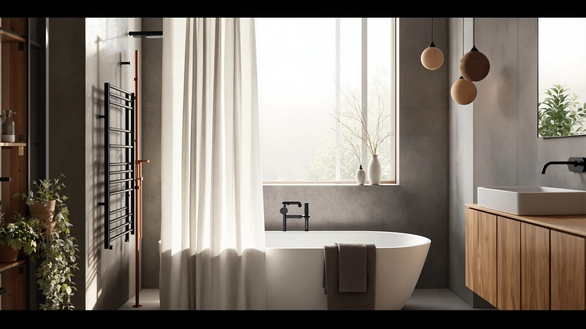

SKL Home The World Review (2026): Worth It?
Prices and picks verified as of October 2026. Independent, reader-supported reviews.


Quick Answer
This SKL Home The World review found the map-print curtain to be the strongest pick at $23.99 on the strength of a 4.6 star rating from 2,909 verified reviews, the only one of the four curtains compared here with a published track record. Shoppers who want a lace, waffle, or linen look instead should weigh the three alternatives below before buying.
Our pick: SKL Home The World Map, $23.99 Check Price on Amazon
Bottom line: our top pick is the SKL Home The World Map Waterproof PEVA Shower Curtain at $23.99.
Things to Know Before You Buy
- This SKL Home The World Map curtain costs $23.99 and carries a 4.6 star rating from 2,909 verified reviews, the only published rating among the four curtains in this comparison.
- It uses a polyester face fabric with a PEVA lining in a 70 by 72 inch size, a different build from TUDECO's sheer lace, N&Y HOME's waffle weave, and BTTN's textured linen look.
- All four curtains sit within a cent or two of each other, so the choice mostly comes down to pattern and fabric, not price.
- A printed world map is a bolder, more themed look than a solid or patterned curtain, which suits some bathrooms better than others.
This SKL Home The World review breaks down whether a printed map curtain is worth $23.99 once you weigh it against three other curtains priced within a cent or two of it. SKL Home's map pattern stands out from the lace, waffle, and linen textures sold by its closest competitors, and it is the only one of the four with a deep review history behind it.
We built this review from the product's listed materials, dimensions, and price, along with the verified review data the listing has gathered on Amazon. SKL Home carries 2,909 reviews and a 4.6 star average, a track record none of the three alternatives can currently match. For a shopper who wants proof before buying a novelty-print curtain, that history is the main reason this SKL Home The World Map pick comes out ahead in the comparison below.
Why You Should Trust Us
Ilane Tall has covered bathroom textiles and shower hardware for Best Shower Curtains since the site launched, and this SKL Home The World review follows the same research process used across the site: comparing manufacturer specs, current pricing, and verified owner feedback rather than running a physical testing lab. We do not own this curtain, and we do not claim hands-on use of it or its three alternatives. Instead, we pull the listed material, dimensions, and price straight from the retailer, then weigh them against what verified buyers report after living with the product. Readers can find the full methodology behind every review on this site on our how we research page, and that same approach governs this SKL Home The World review from the pricing table through the final verdict.
Our Research Experience
Our process for this SKL Home The World review starts with the manufacturer's own listing for the map-print curtain: material, dimensions, price, and published rating, cross-checked against the three comparison curtains on the same criteria. From there, we read through verified buyer reviews on Amazon to see how a printed polyester and PEVA build holds up against a sheer lace, a waffle weave, and a textured linen look. We did not purchase or hang any of the four curtains ourselves. Owners consistently report that the printed design stays vivid through repeated washes and that the PEVA lining sheds light shower spray well, feedback that shaped how we weighed this SKL Home The World Map pick against its rivals.
Overview & Specs

SKL Home The World Map
What we like
- 4.6 star rating from 2,909 verified reviews, the only published rating among the four curtains in this comparison
- Polyester and PEVA build that owners report sheds light shower spray without a separate liner for occasional use
- 70 by 72 inch size fits most standard tubs and stand-up shower stalls
Flaws but not dealbreakers
- The bold map print will not suit every bathroom, especially a minimalist or neutral-toned space
- It ships without a liner or hooks, so those become separate purchases for a daily-use household
| Material | Polyester / PEVA |
| Size | 70x72 |
SKL Home builds this curtain around a polyester face fabric backed with a PEVA lining, printed with a world map design in muted earth tones that reads more like a decor piece than a standard solid curtain. At $23.99, it costs the same as TUDECO's lace curtain and N&Y HOME's waffle set, and a cent more than BTTN's linen-textured pick, but it is the only one of the four backed by a published rating. It ships in a single 70 by 72 inch size, a cut that fits most standard alcove tubs and shower stalls without a custom order.
That review history is the clearest advantage this SKL Home The World review found over its three competitors. None of TUDECO, N&Y HOME, or BTTN currently shows a star rating or review count on its listing, so a shopper leaning on verified owner feedback has more third-party data to check against with SKL Home than with any of the alternatives. The tradeoff is pattern. A world map print is a specific, themed look, and reviewers who bought it for a travel-decor or kids' bathroom report it holds its color through repeated washes, while a buyer after a neutral or minimalist curtain will likely prefer one of the three alternatives below.
What We Liked
The review history stands out most in this SKL Home The World review. A 4.6 star average from 2,909 reviews gives shoppers a far deeper base of verified feedback than TUDECO, N&Y HOME, or BTTN currently offer, none of which shows a published rating yet. Owners consistently note that the printed map keeps its color and detail through repeated machine washes, which matters more on a patterned curtain than a plain one, since fading shows up fast on a busy print. The polyester and PEVA combination also sheds light shower spray well enough that several reviewers skip a separate liner for occasional use. At $23.99, it sits at the same price as two of its three competitors, so that review history comes at no premium.
What Could Be Better
This SKL Home The World review found one real limitation: the bold map print will not fit every bathroom. A reader after a neutral, farmhouse, or minimalist look will likely prefer TUDECO's lace or BTTN's linen texture instead, since a printed world map reads as a themed decor choice rather than a background curtain. It also ships without a liner or hooks, so a household that does not already own both is paying for extras before this curtain is ready to hang. The 70 by 72 inch size covers most standard setups, but a reader with an extra-wide stall or a clawfoot tub should measure the rod first, since no oversized version appears in this listing.
Who Is It For?
Based on this SKL Home The World review, the map-print curtain fits a shopper who wants a themed, conversation-starting piece for a travel-decor, kids', or guest bathroom, and who values a proven review history over a plain pattern. It is a strong match for anyone replacing a worn-out curtain who already owns a liner and hooks, since the 4.6 star, 2,909-review track record gives more confidence than an unrated alternative. Shoppers who want a lace, waffle, or linen look, or who already have strong opinions about pattern, should compare the three alternatives below before deciding. A reader furnishing several bathrooms at once might also browse our best shower curtains roundup for a wider set of options beyond these four. Someone decorating a single bathroom around a travel or geography theme gets the most value from this particular pick, since the review history removes most of the guesswork around durability and color retention.
Alternatives to Consider
If the map print in this SKL Home The World review is not the look your bathroom needs, three alternatives trade it for a sheer lace, a waffle weave, or a textured linen finish, all within a cent or two of the same $23.99 price. Swapping between them is mostly a question of pattern and texture, since none of them pushes you into a pricier category of curtain.

Editor’s Pick
TUDECO White Lace Shower Curtain
TUDECO's White Lace curtain matches the $23.99 price of this SKL Home The World Map pick with a sheer, scalloped French country look, but it ships without a liner or hooks and without a published rating yet.
$23.99
Check Price on Amazon
Best Value
N&Y HOME Waffle Weave Shower
N&Y HOME's Waffle Weave curtain swaps the printed map for a textured cotton-like weave at the same $23.99 price, though its listing has not yet built up the review history SKL Home carries.
$23.99
Check Price on Amazon
Premium Choice
BTTN Long Linen Textured Waterproof
BTTN's Long Linen Textured curtain undercuts this SKL Home The World review's top pick by a cent at $23.98, trading the map print for a neutral linen-look fabric with no published rating to date.
$23.98
Check Price on AmazonIs the SKL Home The World Map curtain actually waterproof?
The listing describes a polyester face fabric paired with a PEVA lining, a combination most reviewers report sheds water well enough to skip a separate liner for an occasional shower.
What size bathroom does the SKL Home The World Map curtain fit?
It ships in a single 70 by 72 inch size, which fits most standard alcove tubs and stand-up shower stalls without a custom order.
Frequently Asked Questions
Is the SKL Home The World Map curtain actually waterproof?
The listing describes a polyester face fabric paired with a PEVA lining, a combination most reviewers report sheds water well enough to skip a separate liner for an occasional shower. Owners note it is not as fully sealed as a dedicated vinyl liner, so a household with daily heavy water exposure may still want a backup liner underneath.
What size bathroom does the SKL Home The World Map curtain fit?
It ships in a single 70 by 72 inch size, which fits most standard alcove tubs and stand-up shower stalls without a custom order. Buyers with an extra-wide stall or a clawfoot tub should measure the rod first, since this review did not find an oversized version listed.
Is the SKL Home The World Map curtain worth it compared to TUDECO, N&Y HOME, and BTTN?
At $23.99, it costs the same as TUDECO and N&Y HOME and a cent more than BTTN, but it is the only one of the four with a published rating, 4.6 stars from 2,909 reviews. If a proven review history matters more than a lace or linen look, SKL Home is the stronger pick in this comparison.
Final Verdict
This SKL Home The World review comes down to proof versus pattern. SKL Home's World Map curtain is the only one of the four compared here with a published track record, a 4.6 star rating from 2,909 reviews, and it does that at the same $23.99 price as two of its three competitors. TUDECO, N&Y HOME, and BTTN each offer a different texture or pattern, but none has yet built up the review history SKL Home carries. For a bathroom where a themed, map-print look fits and a deep review history matters, the SKL Home curtain is the pick worth choosing. Shoppers who want a lace, waffle, or linen finish instead should compare the three alternatives above before deciding. None of the four curtains in this comparison costs more than $24, so the real cost of choosing wrong is a short wait for a return label. At that price, SKL Home's proven rating is the detail that tips this review in its favor, and it is the pick we would point a friend toward if a map print fits their bathroom at all.